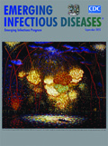

ShareCompartir
ShareCompartir
Emerging Infections Programs
On this Page
About the Emerging Infections Programs
The Emerging Infections Programs (EIP) were established in 1995 in response to the Centers for Disease Control and Prevention's (CDC) 1994 strategy, Addressing Emerging Infectious Disease Threats: A Prevention Strategy for the United States [PDF - 23 pages]. An updated plan released by CDC in 1998, Preventing Emerging Infectious Diseases: A Strategy for the 21st Century [PDF - 19 pages], described the important role assumed by the EIPs in addressing emerging infections.
Funding Opportunity Announcement (FOA) CDC-RFA-CK17-1701 - Emerging Infections Program
Applications for the competitive continuation of EIP are being solicited. This is for the upcoming EIP 5-year project period of January 1, 2017 – December, 31, 2021. The FOA and its accompanying Attachment 1 – EIP Activity Descriptions are available at and are posted below (note that a required Excel budget application template is also available on grants.gov). Applications must be made through Grants.gov and are due no later than June 30, 2016. For more information and CDC contact info, see the FOA and Attachment 1.
Emerging Infections Programs CDC-RFA-CK17-1701 AMENDED [PDF - 690 KB]
FOA-CK17-1701 Attachment 1 - EIP Activity Description [PDF - 655 KB]
The EIP is a network of state health departments and their collaborators in local health departments, academic institutions, other federal agencies, public health and clinical laboratories, infection preventionists, and healthcare providers. The EIP population is roughly representative of the U.S. population on the basis of demographic characteristics such as age, gender, race, and urban residence, as well as health indicators such as population density and percent at or below the poverty level.
This micrograph depicts Gram-positive C. difficilebacteria from a stool sample culture obtained using a .1µm filter. "C. diff." is a hospital-acquired infection for which the EIP sites do active, population-based surveillance. Image courtesy CDC PHIL, image ID 9999, Lois S. Wiggs.
The EIP network is a national resource for surveillance, prevention, and control of emerging infectious diseases. EIP activities go beyond routine functions of health departments by:
- Addressing the most important issues in infectious diseases and selecting projects that the EIP network is particularly suited to investigate
- Maintaining sufficient flexibility for emergency response and addressing new problems as they arise
- Developing and evaluating public health interventions and ultimately transferring what is learned to public health agencies
- Incorporating training as a key function of EIP activities
- Giving high priority to projects that lead directly to the prevention of disease
Activities Conducted Throughout the EIP Network
- Active Bacterial Core surveillance (ABCs): Active population-based laboratory surveillance for invasive bacterial disease. Pathogens included: groups A and B streptococcus, Haemophilus influenzae, Neisseria meningitidis, Streptococcus pneumoniae, and methicillin-resistant Staphylococcus aureus.
- FoodNet: Active population-based laboratory surveillance to monitor the incidence of foodborne diseases. Surveillance is conducted for seven bacterial and two parasitic pathogens: E. coli O157:H7, Campylobacter, Listeria, Salmonella, Shigella, Yersinia, Vibrio, Cryptosporidium, and Cyclospora.
- Influenza activities: Active population-based surveillance for laboratory confirmed influenza-related hospitalizations. EIP sites also conduct influenza vaccine effectiveness evaluations among groups for which ACIP recommends annual vaccination.
- Healthcare Associated Infections-Community Interface (HAIC) projects: Active population-based surveillance for Clostridium difficile infection and other healthcare associated infections caused by pathogens such as MRSA, Candida, and multi-drug resistant gram-negative bacteria. Sites also utilize the National Healthcare Safety Network (NHSN) to perform time-limited evaluations of HAIC data among NHSN facilities participating in the EIP NHSN network.
Surveillance efforts of these core EIP activities generate reliable estimates of the incidence of certain infections and provide the foundation for a variety of epidemiologic studies to explore risk factors, spectrum of disease, and prevention strategies.
Impact
The EIP network’s unique strength and contribution lies in its ability to quickly translate surveillance and research activities into informed policy and public health practice. For example, EIP work has been instrumental in the nation’s post-licensure evaluation of the 7-valent pneumococcal conjugate vaccine, evaluating and honing strategies for preventing severe disease in newborns caused by Group B Streptococcus, developing methodology to estimate ranges of 2009 H1N1 influenza cases and related hospitalization and deaths, and defining the rapidly changing epidemiology and growing burden of MRSA. The network has generated more than 510 publications since 1995 with data obtained from core EIP activities, Active Bacterial Core surveillance (ABCs), FoodNet, Influenza projects, and Healthcare Associated Infections - Community Interface projects, as well as other special studies.
20th Anniversary of CDC's Emerging Infections Program (EIP)
 The September 2015 issue of the Emerging Infectious Diseases journal commemorates the 20th anniversary of CDC’s signature Emerging Infections Program (EIP) in 2015. A partnership between CDC, state and local health departments, academic institutions, practitioners, and others, EIP advances CDC’s core mission to prevent the spread of infectious diseases and save lives through pioneer programs like Active Bacterial Core surveillance and FoodNet. This special issue of the journal will feature articles on various EIP activities, highlighting how this vital network has strengthened the science base and informed public health policy.
Contact Us:
- Centers for Disease Control and Prevention
1600 Clifton Rd
Atlanta, GA 30333 - 800-CDC-INFO
(800-232-4636)
TTY: (888) 232-6348 - Contact CDC–INFO